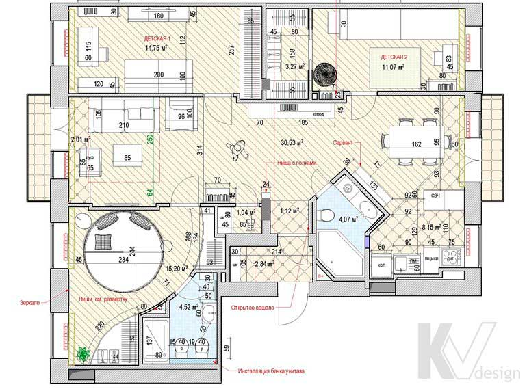

Итоговый план с расстановкой мебели и оборудования

Після розгляду планувальних рішень збирається підсумковий план. Найчастіше його розробляють у двох варіантах: перший - строго відповідно до коментарями замовника і другий - з доповненнями і баченням від дизайнера. Робота над підсумкової плануванням означає в першу чергу роботу над деталями: остаточне проставлення розмірів, розстановка меблів, кухонного обладнання конкретних габаритів і так далі.
На даному етапі обговорення планування може проходити вже по телефону або електронній пошті, зазвичай в кілька прийомів. Попутно в процесі спілкування дизайнер краще дізнається смаки і переваги замовника, що дуже допоможе в подальшій роботі. Завершений і узгоджений підсумковий план вже не буде змінюватися і стане основним при реалізації всього проекту.